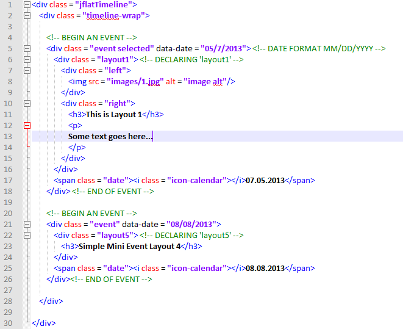
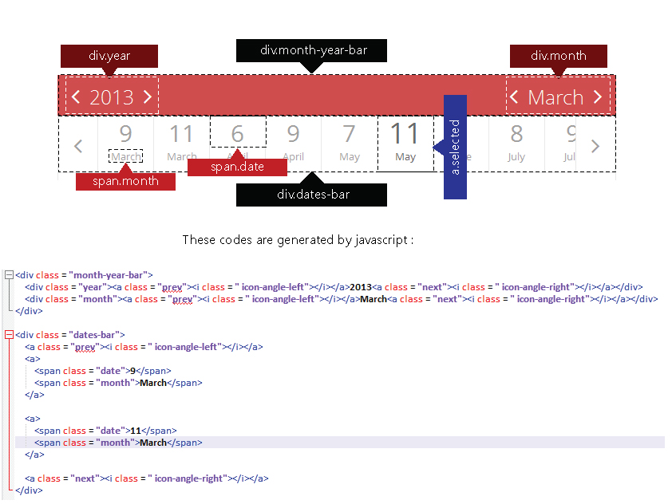

Created: 03/11/2013
By: Tahmidur Rafid
Email: amtrafid@gmail.com
Thank you for purchasing my plugin. If you have any questions that are beyond the scope of this help file, please feel free to email via my user page contact form here. Thanks so much!
This plugin can be used for responsive or fixed layout. All of the information within the main content area is nested within a div with an class of "jflatTimeline". The general structure is the same throughout the template. Here is the general structure.
If you would like to edit the color, font, or style of any elements in one of these columns, you would do the following:
.month-year-bar{
background-color : someColor;
}
If you find that your new style is not overriding, it is most likely because of a specificity problem. Scroll down in your CSS file and make sure that there isn't a similar style that has more weight.
I.E.
.jflatTimeline .month-year-bar{
background-color: #someColor;
}
So, to ensure that your new styles are applied, make sure that they carry enough "weight" and that there isn't a style lower in the CSS file that is being applied after yours.
I'm using two CSS files in this theme. The first one is a general style for this plugin.
The second file contains font awesome icons.
/**** Setting the fonts section ******/ some code /***** Normal Styles *******/ some code /****** Style for the month year bar ********/ some code /***** Style for the bar containing dates *******/ some code /**** Whole style for timeline-wrap ******/ some code
If you would like to edit a specific section of the site, simply find the appropriate label in the CSS file, and then scroll down until you find the appropriate style that needs to be edited.
The topmost bar that contains year and month caption and its background color is red. If you would like to edit the color of this, find the following section in the style sheet:
.jflatTimeline .month-year-bar{
background-color : #xyzxyz;
}
Here some codes are generated by javascript. So the chart showed below may be helpful:
This theme imports three Javascript files.
You need to use this javascript line:
$('.jflatTimeline').jflatTimeline({scroll : '2', width : '700px', scrollingTime : '300'});
I've used the following images, icons or other files as listed.
Once again, thank you so much for purchasing this theme. As I said at the beginning, I'd be glad to help you if you have any questions relating to this plugin. No guarantees, but I'll do my best to assist. If you have a more general question relating to the script on CodeCanyon, you might consider visiting the forums and asking your question in the "Item Discussion" section.
Tahmidur Rafid